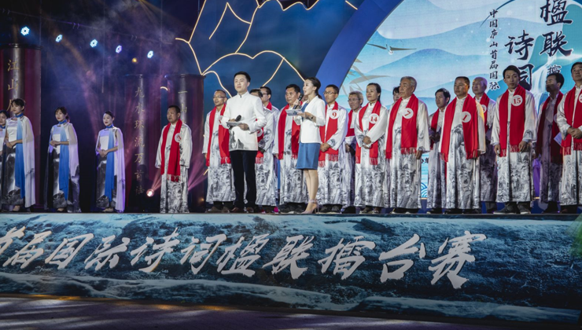

中国首届国际诗词大赛中国首届国际诗词大赛中国首届国际诗词大赛
第一播报讯【记者 高明】 4月20日，中国庐山首届国际诗词楹联擂台赛决赛在庐山旅游文化活动中心隆重举行。本次比赛邀请了中国诗词大会特邀嘉宾、文学博士、北京师范大学文学院教授、博士生导师康震担任本次大赛诗词组决赛特约评委、现场千余名观众一起见证这场中国诗词楹联文化饕餮盛宴。
据了解此次大赛作品征集和甄选阶段，吸引了2290位海内外作者投稿，大赛共收到诗词4100首，楹联2112副，共计6212首作品。共有72位诗词作者进入到了现场擂台赛阶段。其中最年长的参赛选手89岁高龄，最年轻的28岁。今天诗词组决赛现场共20位晋级决赛圈的选手在台上激情澎湃朗诵着自创诗作，后又以诗词界的竞技类项目“飞花令”方式角逐进退，诗赋庐山、共绘诗词庐山人文盛景。
历经2个小时的角逐出一等奖3名，每位奖金伍万元人民币；二等奖6名，每位奖金壹万元人民币；三等奖11名，每位奖金伍仟元人民币；优秀奖20名，每位奖金壹仟元人民币。楹联组设一等奖2名，每位奖金伍仟元人民币；二等奖4名，每位奖金叁仟元人民币；三等奖8名，每位奖金壹仟人民币；优秀奖10名，奖金伍佰元人民币，总奖金额度达到32万元。尤其是一等奖3名，每位奖伍万，其力度是全国罕见的。
今天获得诗词组一等奖的是土生土长的修水人——卢象贤，57岁的他既是知名水产专家，又是知名作家；尤其在继承和发扬传统诗词联方面有独到建树。小说、散文、诗歌样样皆能。“这次举办的中国庐山首届国际诗词楹联擂台赛能够获得冠军，我觉得这也是对我几十年在诗词上孜孜不倦钻研的结果，诗词是我们传统文化中的宝库，带给人们精神层面上很高的追求，孔子说：不学诗，无以言，我们今天学习传统文化，对我们个人提高精神层面的修养有着重要的意义，诗和远方我们一定要选择一个去践行。”